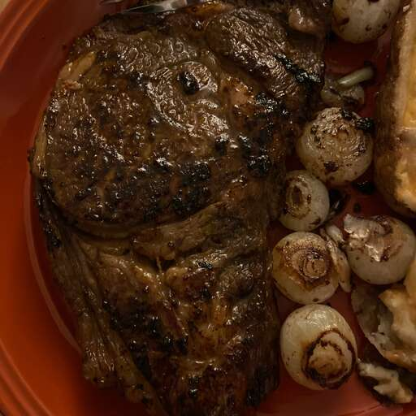

Pan-Roasted Ribeye with Caramelized Onions and White Truffle Butter
Credit to allrecipes.com:

This is a savory steak with the slight sweetness of caramelized onions and the earthiness of truffle oil. I would serve this with some mashed goat cheese and a nice green veggie. This recipe could be for 2, you and your honey! A nice Cabernet would pair well, but I like so many that it's hard to choose. Cheers.
Ingredients
- ¼ cup vegetable oil, divided
- 3 large white onions, sliced 1/4-inch thick
- ½ cup butter, room temperature
- 1 small shallot, minced
- 1 teaspoon white truffle oil
- 2 (14 ounce) Black Angus ribeye steaks
- kosher salt and freshly ground black pepper to taste
Steps
- oven to 350 degrees F (175 degrees C).
- Heat 2 tablespoons oil in a saucepan over medium-high heat. Add onions; cook, stirring occasionally, until onions are dark and soft, about 25 minutes.
- Mix butter, shallot, and truffle oil in a bowl until blended. Refrigerate until set, about 10 minutes.
- Preheat an oven-safe skillet over medium-high heat. Pour in remaining 2 tablespoons oil. Season steaks with salt and pepper on both sides. Cook steaks until browned, about 2 minutes per side. Cover with aluminum foil.
- Transfer skillet to the preheated oven and bake until steaks are reddish-pink and juicy in the center, 4 to 6 minutes. An instant-read thermometer inserted into the center should read 130 degrees F (54 degrees C). Let rest in the skillet, covered, about 5 minutes.
- Slice steaks and transfer to serving plates. Cover with onions; top with a slice of truffle butter.